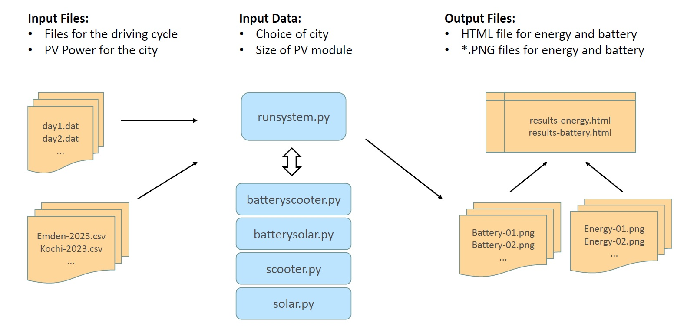

|
SunDriver |
What is SunDriver?
SunDriver is two things:
- a Python software for the design of a photovoltaic system that charges a scooter
- a lecture once held at the University of Applied Sciences Emden/Leer, Germany
The software
The software package is here: ScooterSysFinal.zip,
please check the lecture page for step by step documentation.
The following software needs to be installed on your computer:
SunDriver calculates local power generation by a photovoltaic system. The power is stored
in a battery. The battery is used to charge an electric scooter based on a drive cycle per week.
The location for the photovoltaic system can be choosen from anywhere in the world.
The data for PV power production is retrieved from an external website:
PHOTOVOLTAIC GEOGRAPHICAL INFORMATION SYSTEM (PVGIS).
For PVGIS, choose:
- HOURLY DATA
- PV Power
- Installed Peak PV power = 1 kWp
The data needs to be exported as *.csv file. The overall layout of the system can be seen in the following picture.

The lecture
The full lecture can be found on a separate page.
- Duration: 1 semester (in combination with project management (not included here)
- Level: Bachelor or Master in Engineering, Material Science, Physics, Chemistry
- Requirements: NO prior knowledge of programming, it starts at zero
- Final goal: students should be able to write small programs (read data from file, process data, write output to file) and generate output with graphs and HTML pages
Motivation:
Most students in Engineering need some skills in programming. This course targets at those,
who want to have a minimum setup: just a computer with a plain text editor. No software licences
to be paid, all things are freely available. The course is intended to be taught and not
primarily for self study. All programming examples are included - step by step.
created by Uwe Reimer (Emden, Germany), July 2026 // Creative Commons license CC BY //